History, Culture and Traditions
The Ivatan are the people who live in Batanes, a group of 10 islands in the northernmost part of the Philippine archipelago and the smallest province in the country, with most of its estimated area of 20,930 hectares being mountainous. It lies on the northern frontier of the Philippines, some 200 kilometers to the north of Claveria town off the northern coast of Cagayan province. Basco, the provincial capital, is about 500 kilometers from Manila. Its northernmost islet is only 218 kilometers from the southern tip of Taiwan. Thus, Batanes is nearer to Taiwan than Manila. The islands were also known as Bashee Isles, also referred to by Herman Melville in Moby Dick. First used by 17th century voyager William Dampier and his men, the term “Bashee” referred to the Ivatan sugarcane drink that eventually became famous to whalers, shippers, and even pirates that visited the islands until 1783, when Governor Joseph Huelva y Melgarjo established the presence of the Spanish colonial state in Batanes.
Batanes shoreline, 1990 (CCP Collections)The Ivatan permanently settled on only three islands: Itbayat (9,290 hectares), Batan (7,573 hectares), and Sabtang (4,067 hectares). Itbayat, the largest island of the Batanes, is the Philippines’s northernmost town. The most populated is Batan, where the provincial capital of Basco lies on the fertile plain that adjoins the rolling foothills of Mount Iraya, a dormant volcano 1,009 mterers above sea level. Batan is referred to as the “mainland,” being the seat of the provincial government. Sabtang lies 7 kilometers southwest of Batan.
The seas surrounding Batanes are calm and navigable in April, May, and June. But at other times they become turbulent and dangerous to sea craft, being in the direct path of Pacific-born typhoons which yearly visit the Philippines. Typhoons and storms are the bane of Batanes. Only root crops can be grown for most of the year. Typhoons are sometimes so strong that farms are swept clean of all plants. Seas are too rough for fishing even before the typhoon season. Less harmful storms blow a lot of sea spray, killing coastal crops and grasslands with salty mist.
In 2002, the Ivatan numbered around 15,834, scattered over six towns: Basco, Mahatao, Ivana, and Uyugan, all in Batan; and Sabtang and Itbayat. The Ivatan or Itbayat comprise 96% of the total population of Batanes, the remaining 4% being Tagalog, Ilocano, and other ethnolinguistic groups. As of 2010, the total population of Batanes is at 16,604. The higher provincial population estimate of 20,000 includes students and workers who go back to Batanes at least once a year. The population is divided equally between males and females and grows at its historical rate of less than 1% a year. The constant population can be attributed to the lack of economic opportunities, which has led those who cannot be absorbed by the small island economy to migrate to other parts of the country, chiefly the Metropolitan Manila area in Luzon. Those who migrated to Mindanao in the 1950s in search of economic opportunities settled down in government homesteads in Bukidnon and Palawan.
A distinct language called Ivatan is spoken on the Batanes islands and by those who have relocated to the Bukidnon area, Lanao del Sur, Cotabato, Manila, and Palawan. Related to Ivatan are the Basco Ivatan, Itbayaten, and Southern Ivatan. Babuyan or Ibataan is spoken in the Babuyan Islands south of Batanes. Yami, a language used in the Orchid island of Taiwan, is reported to be similar to Ivatan. Aside from Ivatan, Filipino, English, and Ilocano are also spoken.
Video: The Ivatan Children of the StormA distinct language called Ivatan is spoken on the Batanes islands and by those who have relocated to the Bukidnon area, Lanao del Sur, Cotabato, Manila, and Palawan. Related to Ivatan are the Basco Ivatan, Itbayaten, and Southern Ivatan. Babuyan or Ibataan is spoken in the Babuyan Islands south of Batanes. Yami, a language used in the Orchid island of Taiwan, is reported to be similar to Ivatan. Aside from Ivatan, Filipino, English, and Ilocano are also spoken.
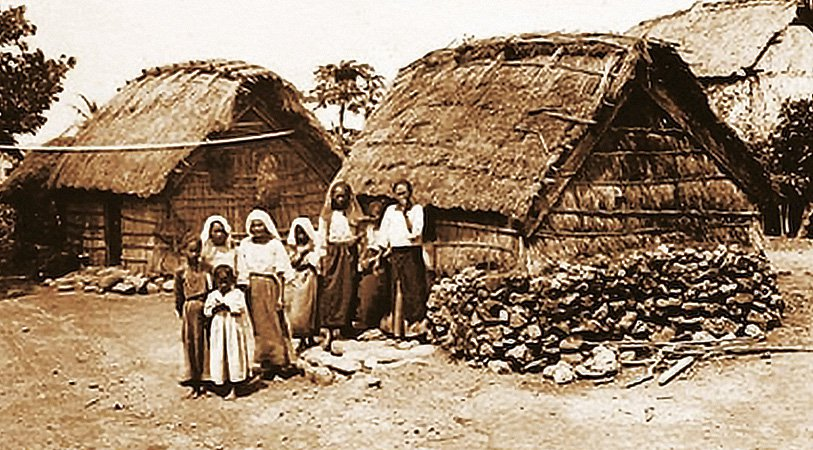 Ivatan women and children, early 20th century (Office of the Provincial Government of Batanes, batanes.gov.ph)A distinct language called Ivatan is spoken on the Batanes islands and by those who have relocated to the Bukidnon area, Lanao del Sur, Cotabato, Manila, and Palawan. Related to Ivatan are the Basco Ivatan, Itbayaten, and Southern Ivatan. Babuyan or Ibataan is spoken in the Babuyan Islands south of Batanes. Yami, a language used in the Orchid island of Taiwan, is reported to be similar to Ivatan. Aside from Ivatan, Filipino, English, and Ilocano are also spoken.
The precolonial tribal community was headed by a mangpus (chieftain), who was assisted by several mapolon, each of whom was responsible to the mangpus for a subdivision of the idi or kavahayan (town).
For security against attacks from other tribes, the prehistoric Ivatan, down to the 18th century, lived close to the ijang (natural rock formation, usually limestone formation or volcanic in origin), which served as a fortress for defense or refuge when they were attacked by rival tribes. Archaeological studies on an ijang at Basco, the top of which is about 100 meters above sea level, reveal earthenware and man-made stone walls that suggest habitation and fortification (Dizon and Santiago 1996, 485). The 20-meter high ijang at Chadpidan, northwest of Basco, contains rock boulders that were transported by prehistoric Ivatan from lower areas to build walls.
Intertribal hostilities involved men only, and customary law prohibited the harming of womenfolk because they were the tribal procurers of food during wartime. Artifacts and oral tradition indicate that they had customary peace agreements.
In 1686, Father Mateo Gonzalez, a Dominican missionary in Fuga in the Babuyanes, and Father Diego Piñero landed in Batanes. To get additional help, Gonzalez returned to Luzon, leaving Piñero on the islands to learn the Ivatan language. While Gonzalez was away, the English freebooter Captain William Dampier and his crew of Dutchmen came and procured supplies from the islands from August to October 1687. He named Itbayat “Orange Island,” in honor of Prince William of Orange; Batan “Grafton Isle”; and Sabtang, “Monmouth Isle,” after the Duke of Monmouth.
Gonzalez was back in Batanes in 1688 with another priest, Father Juan Ruiz. Piñero by then had learned the Ivatan language. But in a short while, Gonzalez and Ruiz died, and Piñero returned to Luzon, leaving Batanes without missionaries till 1720, when Father Juan Bel and Father Alonso Amado reopened the Dominican mission there. Finding it extremely difficult to survive there, Bel and Amado asked the Ivatan if they would agree to transfer to Calayaan. Over a hundred Ivatan were resettled, but many of them died from disease and lack of food. In 1741, another batch was resettled along the bank of the Cagayan River, opposite the town of Camalaniugan, but they sailed back to Batanes before long.
In 1754, Father Vicente Garcia OP, professor of theology at the Universidad de Santo Tomas in Manila, volunteered for the Batanes mission with another priest, Father Joaquin Martin OP, who died shortly after their arrival. Garcia went back to Luzon for help and soon returned with Father Juan Azcarraga OP, who was vicar of Camalaniugan at the time he left for Batanes. They soon fell seriously ill, and they sent for help from Cagayan. Father Raymundo de Pavon OP went to the rescue but he also got sick, and thereafter Azcarraga died. The mission was once more abandoned.
The Dominican Chapter of 1771 requested the king of Spain to establish a government on the islands and assign a military detachment there for security so that Christianization could be facilitated. He agreed.
Governor-General Jose Basco y Vargas by an unknown artist, 18th century, “Conde de la Conquista de Batanes”In 1782, Governor-General Jose Basco y Vargas sent an expedition to get the formal consent of the Ivatan to become subjects of the Spanish King. On 26 June 1783, Joseph Huelva y Melgarjo, first governor of Batanes, Dominican Fathers Bartholome Artiguez and Baltazar Calderon, and their military escort and functionaries met the representatives of the Ivatan on the plains of Basay, or what is now Basco town, to perform the rites of formal annexation of the Batanes to the empire of Spain. The new province was named Provincia de la Concepcion. Governor-General Basco was named “Conde de la Conquista de Batanes,” and the capital town was named Basco after him. Thus began the unification of the Ivatan under a centralized government. Following Basco’s instructions, Batanes Governors Huelva y Melgarejo and Miguel del Amo chose a policy of attraction. From its establishment in 1783, Basco town was the seat of political and missionary operations reaching out to Mahatao. The San Jose de Ivana mission was established in 1784, and it covered Uyugan and Sabtang.
In 1789, when Joaquin del Castillo became governor, he decreed that the Ivatan come down and live in compact, newly laid-out towns, give up their traditional costumes and customs, and adopt the ways preferred by the Spanish government. They eventually acquiesced but not without some resistance. Agents of the Spaniards who went to Sabtang offended Mangpus (Chief) Kenan also known as Aman Dangat, and were killed. Governor del Castillo had Aman Dangat captured and executed publicly at Basco in September 1791, then ordered the population of Sabtang to be resettled in the districts of San Felix and San Vicente in Ivana immediately, where they remained until 1844.
Del Castillo’s decisive policies soon had most of the Ivatan settled in assigned home lots along street grids, laid out with ropes in new townsites organized around the church, the convent, and the government buildings. Textile from Luzon was imported and made available so that the Ivatan could clothe themselves according to Spanish notions of modesty and decorum. Abalorios (beads) brought by the friars as gifts to the natives were now prohibited.
Because fires and typhoons routinely destroyed the government and mission buildings, cal y canto (lime-and-stone) churches began to be built around 1795 with the help of imported masons, stonecutters, and carpenters from Cagayan. First to be so constructed was the church of Santo Domingo at Basco, then San Jose in Ivana. The techniques of lime-and-stone construction were then used for vernacular architecture, producing over the years the massive, thatched, and typhoon-resistant house unique to Batanes. In 1830, there were already 19 of these casas de piedra (houses of stone).
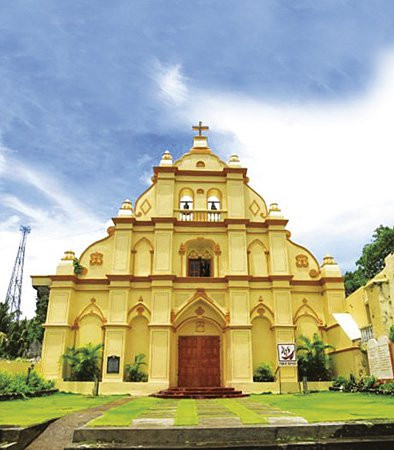 Santo Domingo Cathedral, also known as Basco Cathedral, 2016 (Jonas Roque)By 1799, the Manila government, convinced that the Batanes provincial government was unable to support itself, decided to downgrade it. The office of Spanish governor was abolished, and the Cagayano Valerio Bermudez was appointed alcalde (governor). He held that post for 30 years, during which time the Dominican missionaries had the upper hand in both governance and development work. The priest-engineer-architect Father Nicolas Castaño, who constructed the imposing facade of the Santo Domingo Church at Basco in 1812, also built the stone bridges that to this day are still in use in San Vicente and Tuhel in Ivana, and probably the one at Basco and San Felix. He also wrote a catechism in Ivatan, which was printed in 1834, the first known printed Ivatan text. At this time, some literacy in the romanized orthography may already have resulted from the catechetical schools, which also taught practical skills. The beaterios, which to this day have housed small communities of women called beatas, were probably established at this time. These women—lay Dominican members of the Third Order—served as teachers as well as maintainers of the church facilities. In 1814, Father Fausto de Cuevas began the construction of the unique crenelated campanile of the San Jose Church in Ivana.
Livestock raising was encouraged at this time. In 1830, there were 13 carabaos, 304 cows and 107 oxen, 90 lambs and 51 sheep, 2,085 goats, 649 pigs, and 5 horses. In 1828, the government ranch in Ivana had 79 heads of cattle from which they supplied beef to the troops and other important people at the capital. The plow as tool for agriculture may have come along with the carabaos and the oxen that pulled it.
The Ivatan lived peacefully within the resettlement towns, which were fenced by rasayan (low, peripheral walls). Within the towns, they raised domesticated livestock, such as pigs; beyond the rasayan, they cultivated farm crops. The rasayan were primarily designed to keep domesticated animals from straying into and destroying the farms.
Poor sanitation and hygiene in the new compact settlements may have aggravated the health of the population, killing thousands of them periodically. In 1801, the population was reported to be 14,477. By 1829, this number had declined to 10,712, rising to only 11,202 in 1852.
As the Spanish Empire began losing its colonies to the independence movements in Latin America during the first decades of the 19th century, and as the colonial government in the Philippines was faced with an increasing need for self-support through increased local production, Spanish functionaries like Jose Ma. Peñaranda were sent to review patterns of local government and production to the provinces and colonial outposts. In 1831, Peñaranda reported his thorough displeasure with the low subsistence economy of the Ivatan, which he blamed on the Dominican missionaries and Alcalde Bermudez’s subservience to them.
New civil officials were appointed, each with his own idea of economic productivity plans. To spearhead the production of arrowroot flour, some Chinese were brought in during the terms of Alcalde Luis Lima. But typhoons perennial to Batanes wrought havoc on their efforts, and the Chinese, whose brief experiment was on the island of Vuhus, departed. Once again, the Ivatan were left to their traditional resources and subsistence occupations of farming, fishing, and petty trade with their neighbors in Northern Luzon.
The pontin (trade boat) took Ivatan jars of lard, a by-product of their hog production, to Cagayan and the Ilocos and brought home on the return voyage from Luzon, especially the Ilocos, some textile, gold, and stoneware jars called angang, used for the fermentation of palek.
By 1841, the Isabtang, in exile in Ivana for already half a century, were in fact already back in their home islands cultivating their farms, going to Ivana on weekends to fulfill their religious duties. In 1844, the Spanish government recognized the reestablishment of Sabtang with the appointment of Father Antonio Vicente OP as regular vicar. In his 19 years as vicar, Vicente built the church of San Vicente Ferrer, the convent, the beaterio, a girls’ school, and the tribunal (town hall). Sabtang was also created as a new municipality with its own set of civil officials.
Itbayat alone remained at this time as a political and missionary frontier, but by 1855, the Itbayat mission was formally recognized. In 1855, the era of the alcaldes ended and the governorship was restored, indicating a modicum of political and economic upswing at this time. Fernando de la Cueva was assigned as the first governor of the restored province.
The growing business and trade in the Philippines resulted in some overflow of wealth into the countryside. Around 1873, stone schoolhouses for boys and girls were built; the San Vicente Church in Sabtang was decorated by the priest-artist Father Rafael Cano OP, in splendid baroque polychrome and gilt; a beautiful new church in San Carlos was built by Father Crescencio Polo OP in 1873, also decorated in baroque style.
Around 1890, a mail boat visited every three months, thus increasing the contact of the Ivatan with Luzon, and especially, Manila. The export of pork, lard, and cattle increased local income. Father Mariano Gomez OP improved local cattle raising by importing a new, larger breed. With new wealth, and transportation to and from Manila, galvanized iron became available, and the cogon roof of the Santo Domingo Church at Basco gave way to new roofing. Ivatan architecture entered a new stage.
Many Ivatan were able to go to Manila at this time, some to find jobs as laborers and domestics, a few to study. Juan Castillejos went to the Escuela Normal and in the process got in contact with the Katipunan. He became a vital link between Batanes and the Philippine Revolution. Through this contact, the Ivatan affiliated with the Katipunan. Most of the recruits were members of the armed forces and civilian militia under the command of the last Spanish Governor of Batanes, Julian Fortea, who was unaware of Katipunan activities.
On 18 September 1898, Katipunero (Filipino revolutionaries) from Luzon commanded by Rafael Perea on board the boat Compañia Filipinas landed at Radiwan in Ivana, hoisted their flag on the church’s campanile, and went to town to feast. Meanwhile, the Ivatan civilian militia at Basco refused to heed the Spanish governor’s summons to report for duty. The soldiers turned against the governor, who was forced to take refuge in the Casa Real with his family. His own soldiers, headed by Corporal Marcelino Romero, together with Ivatan katipunero, headed by Teofillo Castillejos, opened fire on the Casa Real all night. Fortea was found dead the following morning, though his wife Doña Asuncion and their five children survived. At the time of the Revolution, there were 18 Spaniards on the islands. Most other Spaniards, including seven Spanish missionaries, fled into the jungle for safety. By morning of the 19th, the Katipunero anchored at Basco and were welcomed by Teofilo Castillejos. The Spaniards were then hunted down and taken prisoner.
On 20 September, elections for provincial and municipal officials were held. Teofilo Castillejos won as governor. On 25 September, the Spanish prisoners, the newly elected provincial and town officials, and the men of Perea left Batanes for Lal-loc, Cagayan, where the new officials were to take their oath of office. Batanes was left under the charge of Antonio Llopis, the appointed commander of the 160 soldiers from the former Spanish government. Due to logistical problems and bad weather, the Ivatan officials remained in Cagayan for over four months, in which time the collection of poll taxes by the Batanes military to support themselves was turning the Ivatan against the new government.
When the officials returned on 2 February 1899, the poll tax of a peseta (0.20) was abolished but a residence tax of one peso was imposed along with taxes for branding cattle. Moreover, the people were made to make bolos, arrows, and daggers, and dig trenches as fortification against the imminent attack of the Americans.
The Americans did not come that soon. Meanwhile, the Ivatan from Sabtang revolted against what they perceived as oppressive policies of Castillejos who had assigned his relatives to be their new feudal lords. On 5 June 1899, after the Governor’s relatives in Sabtang had been imprisoned by the Isabtang the night before, 30 boatloads of rebels came out to kill Castillejos; they failed because their fellow rebels on the Batan Island did not keep their word. The Sabtang rebels were arrested and tortured in prison by the governor’s son Juan.
In February 1900, the USS Princeton landed in Batanes to begin American rule. The province became a mere township under Cagayan, this status being confirmed by The Provincial Government Act or Act No. 83 of the American government enacted on 6 February 1901. The American public school system was also immediately established, and classes were held in the schoolhouses built under the Spanish period. The medium of instruction was English as prescribed by Act No. 74, Sec. 14, enacted on 21 January 1901. The campaign for health, hygiene, and sanitation was launched and emphasized, especially because of the devastating cholera epidemic that hit the province in 1902 to 1903.
In 1908, the Ivatan trade boat Alegria sank in the Balintang Channel with its crew, cargo, and passengers. That tragedy ended Ivatan indigenous trade with Luzon. Henceforth, the Ivatan were to depend on government mail boats and occasional interisland commercial ships for travel to or trade with Luzon.
Batanes became a province again through Act 1952 enacted on 20 May 1909. Otto Scheerer was appointed the first governor of the province. To maintain communications with this distant outpost, the government in Manila erected a wireless telegraph tower and station at Basco before 1920. A provincial high school was opened in 1917 also at Basco, although the senior year was not offered until a decade later. In 1928, the Batanes High School graduated its first six graduates. This began a process of recruitment of the most promising Ivatan youth for emigration to Manila where those who could took up higher studies while others looked for menial jobs in the metropolis.
In the 1930s, the Spanish tile roads that connected the towns through steep mountain shortcuts were replaced by new highways. Agricultural lands to the northeast of Basco were converted into an airport. Meanwhile, the main livelihood of the province continued to be subsistence agriculture and fishing. Hog and goat raising was mainly for local consumption, but large cattle were raised for export to the Manila market, becoming the main source of cash aside from public works.
The Japanese arrived in Batanes on 8 December 1941. They bombed the Basco airport and destroyed the wireless telegraph tower with cannon shots. They then occupied the towns without resistance, ordering the people to provide them food and labor for their fortification projects.
Ivatan resentment became aggressive resistance in 1945 when the BISUMI Fighters Hunters ROTC, a guerrilla command, made Sabtang its base of operation. The Japanese garrison in Sabtang was attacked and wiped out on 25 April 1945. Suspecting the worst, the Japanese command on the Batan Island under Lieutenant General Hikotaro Tajima sent an expedition to Sabtang. The guerrillas defended Sabtang valiantly, but without their commanding officers and with superior Japanese firepower, they lost. Tajima executed all those who killed or conspired to kill any of the Japanese in Sabtang, as well as all leaders and supporters of the BISUMI Fighters.
Since World War II, contact with the rest of the Philippines has steadily increased. With the improvement of the Basco airport, regular flights to and from Batanes have been established. Media and radio communication has lessened cultural isolation. Public works have steadily improved infrastructure, including limited electrification. The coming of inboard motor engines for Ivatan seacraft has greatly improved domestic interisland transport and travel. With this and with the availability of large, deep-sea fishing nets from Manila, the fishing industry has grown. The movement from traditional subsistence farming to the beginnings of a cash economy is indicated by the increased number of Ivatan stores retailing Manila goods and the shift from root crops to rice obtained from Luzon as staple food. Bottled alcoholic beverages from Manila have also been replacing the Ivatan palek.
The Batanes High School has since become the Batanes National High School (BNHS), with branches in Mahatao and Ivana. To help promote vocational skills, a school of fisheries was opened in Sabtang in 1966. In the 1970s, the Basco School of Arts and Trades, which became a polytechnic college in 1995, was established, while an agricultural high school was put up in Itbayat to replace the earlier branch there of the BNHS. At Basco, Msgr Mario Baltazar OP established Saint Dominic College Foundation, which offers various baccalaureate courses, and recently, graduate courses in education.
Ivatan People Way of Life
The chief means of livelihood of more than 75% of the Ivatan labor force are agriculture and fishing. The rest of the Ivatan are employed in the service sector, including the government or public sector. Another important source of livelihood is cattle raising, which, however, has been unsustainable in the sense that the Ivatan have destroyed their forests that facilitated the grazing of cattle and the production of garlic. Cattle and garlic are the two principal agricultural exports of the province. Other food crops are camote (sweet potato), cassava, gabi (tuber), and a unique variety of white ube. Sugarcane is raised to produce palek and vinegar.
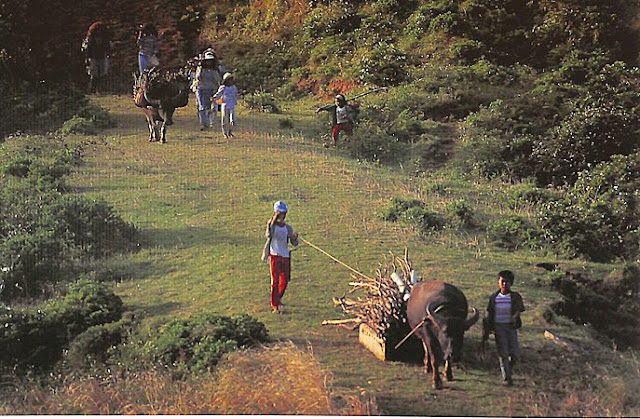 Ivatan farmers, 2000 (Batanes, Philippines edited by Chit L. Lijauco. Office of Rep. Florencio Abad and the Office of Northern Cultural Communities in partnership with the Katutubong Filipino Foundation, Inc., 2000.)The seas surrounding the islands are a bountiful source of fish and other marine products. However, problems of storage, preservation, and transportation, and outdated fishing methods have limited the potential of the fishing industry. There has been a decline in catch as a result of illegal fishing by Taiwanese fishers who use sophisticated methods.
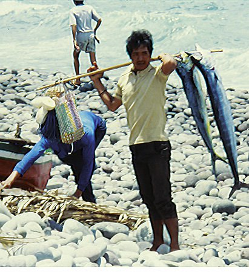 Ivatan fisherman with his catch, along Mananioy Bay, Batanes, 1990 (CCP Collections)Agricultural output is kept low by the lack of a regular market for agricultural produce. There is no regular commercial sea vessel plying the Batanes mainland Luzon route. In Batanes, market conditions do not encourage increased productivity. For example, on Batan, there is no trucking service for transporting agricultural produce. None of the six municipalities of Batanes have a central public market. The market system consists of sari-sari (small retail) stores selling dry goods most of the time.
Agriculture is confined to small parcels of land located along coastal flatlands and slopes and on the hillsides inland. Except for Itbayat, which has undulating low terrain, flatlands are limited because the islands are mountainous. The arable coastal lands and inland flatlands are tilled with carabao and ox-drawn plow. Except on Batan, hillsides and mountain slopes are tilled with crude equipment. In the tree and bush-covered parts, slash-and-burn farming methods are used. The people know the importance of trees, and they have made the reforestation of their kaingin (swidden) farms a regular part of their farming route.
In 1988, the two major communication systems in the province were the Radio Communication of the Philippines Incorporated (RCPI) and the Bureau of Telecommunications. In the 1990s, a community radio station started operations, and telephone also became available. Electricity used to be generated only on Batan and only during certain hours. The energy problem presented an impediment to the operation of local enterprises, particularly fish production and storage in commercial quantities. In 2004, the country’s first and only renewable power system was inaugurated in Mount Sumhao, located five kilometers southeast of Basco. The system, which is expected to provide electricity to the whole island of Batan, is composed of three wind turbines and two standby diesel generators for when the winds are weak. With the exception of Basco, Batanes still has limited cellular phone signal and electricity.
While a small population ensures a negligible unemployment rate, employment opportunities for school graduates are scarce. Over the years, most of the educated Ivatan have migrated to urban centers elsewhere or gone abroad. Batanes continues to have a low-to-moderate standard of living, compared with other areas of the country, despite its 97% literacy rate. However, housing census and statistics on ability to meet minimum basic needs (MBN) indicate comparatively high ratings.
Distance and bad weather work against the economic growth of Batanes. Certain commodities sold in Batanes carry a 75 to 100% markup on Manila retail prices; gasoline and diesel fuel is about ten pesos per liter more expensive than that in Manila.
Typhoons periodically devastate crops and infrastructure. Rice production is negligible, and rice consumption is met through imports from other parts of Luzon.
Ivatan People Way of Life
Traditional Ivatan society was hierarchal, with the village chief called mangpus at the top, assisted by district subalterns called mapolon. The community is called kumaidian. There were instances of slavery. The mangpus and mapolon were considered the elite, possessing great wealth identified with power. The mapolon were subordinate officials in charge of different sections or districts of the territory. They were independent of one another and answerable only to the mangpus. The mangpus collected revenues from the whole town, administered justice, and led their people to war against another mountain village for a host of reasons, including revenge for injury caused. Below them were the kumaidian, who cultivated the land and served as warriors. The slaves occupied the bottom rung of the social ladder. A person became a slave through purchase. He also became the slave of the person who had paid his debt for him. A thief, if caught, became the slave of the intended victim.
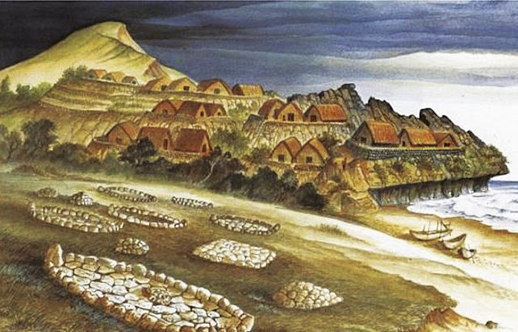 Artist’s sketch of early Batanes settlements, undated (Office of the Provincial Government of Batanes, batanes.gov.ph)Wealth determined the rank and dignity of a person. It was a point of honor among the chiefs and principals to make a show of their riches by hosting lavish feasts, where a great number of pigs and other animals were slaughtered, or by displaying in the attire of their children all the gold and silver they possessed. Letters written by Dominican priests during the Spanish occupation indicate that the Ivatan only sold their pigs to the Spaniards if exchanged for gold. It was with such transactions that the nobility were able to accumulate gold, in addition to those acquired from rudimentary panning.
For over a century, the Ivatan came under the domination of the central authority based in Manila. The Spaniards were succeeded by the Americans, who put an end to a brief interlude of political independence under the victorious Katipunan forces. Then came the Japanese, who established a garrison in the islands. Since the end of World War II and up to the present, the Ivatan have been governed as a local political unit under a centralized republican form of government. Batanes has a lone congressional district. The governor is the chief executive of the province; with the assistance of a provincial board, he formulates policy and implements projects. Each of the six municipalities in the four inhabited islands has a mayor and a set of councilors, and each barangay is headed by a barangay captain.
Ivatan Social Organization, Customs and Traditions
Some social institutions of the ancient Ivatan have survived to the present, despite centuries of Christian acculturation and the process of modernization. Precolonial Ivatan society being hierarchical, the family served as a stabilizing institution with its emphasis on obedience to elders and specialization of economic functions. Thus, children showed respect for the authority of parents and assisted them in domestic chores, the boys going out with their fathers to fish at sea, and the girls helping their mothers with household work. Ivatan girls were also expected to help in the fields when they came of age, digging up yams and camote and bringing these home for the family’s daily consumption. While their houses were built on mountain slopes, their farms were in the valleys not too far away. There was individual ownership of land; a man worked his land, planting it to crops enough for his needs. In this way, there was self-sufficiency among individual households, despite the harshness of the seasons.
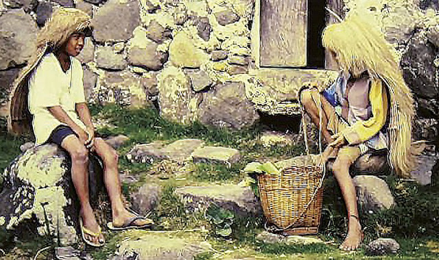 Ivatan children in front of a stone house, 1990 (CCP Collections)While strong filial bonds existed in the individual family unit, the Ivatan were likewise capable of fostering among themselves a strong sense of solidarity. They were used to the habit of organizing themselves into mutual help groups, a practice which was formalized in an interesting social institution. The Ivatan had the kayvayvanan (cooperative work among 20 or more adult men and women). They would gather early in the morning to the sound of the vadiadong (shell horn) and work together.
Part of the traditional Ivatan work ethic is the practice known as payohoan (helping one another), which involves a group of about 10 to 15 adolescent boys and girls working together for 3 to 5 months. In Itbayat, work groups are classified according to the manner of work, number of those involved, length of cooperative work, and distribution of harvest or earnings. These groups are the pi’o’xoan, pondo, panavatan, yaaro, pisiisi’dongan, pitolotolongan, pagan, and pivaxvaxsan. Most of these work groups are headed by a designated leader called kabasiilya. All Ivatan who work in the fields are expected, at day’s end, to gather in one of the houses, rest on long benches, and entertain themselves with conversation, stories, and songs. This kind of communal sharing and entertainment, in which everyone is obliged to contribute a story or song, or risk the penalty of paying a light “fine” in the form of palek, is an extension of their day-to-day economic activity, and make daily toil in a harsh environment more bearable.
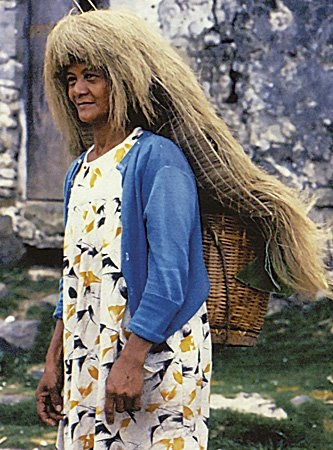 Ivatan woman wearing a vakul or traditional headgear, 1990 (CCP Collections)Arranged marriage is the traditional custom among the Ivatan, but unlike in other Philippine societies that practice child marriage, the betrothed girl and boy would be wedded only when they reach adulthood. The boy’s family is expected to give half of the dowry while the groom saves up for his part. Since it takes quite a while to prepare the dowry, marriage has to wait.
A young man who already wishes to marry requests a trusted community elder to present his suit to the girl’s parents after he and the girl have agreed to pursue the marriage. If the parents are agreeable, the go-between and the man come on an appointed date and time to make a formal presentation of the man, at which time the date of the ritual pre-wedding session is arranged. At the pre-wedding session called kayun, a group of chosen elders representing the man and his family meet a group of chosen elders representing the woman and her family. In this session, conditions of the forthcoming marriage are set, including the dowry, residence, and date of the wedding.
Preceded by the long period of waiting, the wedding is celebrated outdoors in either the house of the bride or the groom. Extravagance and much merrymaking mark the celebration, particularly when a very prominent person is getting married.
Once Christianized, the Ivatan added new religious symbolisms to the wedding rituals, but the ritual negotiations and the festivities of eating and dancing and community merriment and well-wishing associated with pre-Christian society are still very much present. A typical Ivatan-Christian wedding is somewhat different from a wedding in rural Philippines.
The wedding over, the couple goes to the bride’s house to receive the blessings of the girl’s parents, after which they go to the man’s house to do the same. In the groom’s house, the wedding is celebrated with feasting and dancing. The couple opens the dance, after which the bride and groom sit on both ends of the table. The guests dance on invitation by the official lead dancer called manayay. As each dance is finished, the guests individually place their gala (usually cash) on the gala plate on the table. A clerk lists every donor and the amount given for future reference. Each donor is served a cup of wine. The dance may go on all night.
Like any traditional people, the Ivatan were much given to feasts that celebrated the high points in their life. Even when Christianity was introduced, the Ivatan did not abandon their old ways, but merely added Christian church ritual trimmings to traditional Ivatan feasts, which were still reckoned according to the old ways. A case in point is the reckoning of the planting season for the root crop ubi. These feasts included the meirayoon when they began running out of ubi from the last harvest. June marked the end of the fishing season and the beginning of celebrations lasting a month. November also signaled a period of feasting, which meant the slaughter of many pigs. But the occasions did not always have to be happy ones for feasting to take place. Sad events and misfortunes also provided an opportunity for lavish feasts.
Until the arrival of the Spaniards, the Ivatan buried their dead in large earthen jars called padapaday in the sandy littoral plains. Today, diggings and occasional erosion often expose the burial jars. Archaeological excavations since 2002 in Dipnay Supuan, Batan, suggest that the prehistoric Ivatan placed the body of their dead inside two jars, one serving as cover for the other. Each jar is about 60 centimeters high with diameters averaging 47 centimeters at the rim, 18 centimeters at the base, and 58 centimeters at the widest part. Although tales of buried treasures have always been circulating, it is not likely that the treasures of the aboriginal Ivatan lie buried in these grounds, for the Ivatan valued their ornaments, especially gold. And when they buried their dead, it was customary to retrieve the personal ornaments of the dead before interment. A few beads have been recovered in some places, but diggings in recent times and eyewitness accounts in the middle of the 18th century aver that there is not much heirloom treasure to be retrieved from the ancient burial sites.
It was the Ivatan belief that when people from the elite class died, their souls were taken to heaven where these were transformed into stars. The souls of the poor, however, wandered all over the world and became spirits. Since the aboriginal Ivatan believed in life after death, they customarily buried with their dead some tools and food and earthen pottery to serve as containers in the other world.
Religious Beliefs and Practices of the Ivatans
Two types of Ivatan religious consciousness are to be distinguished: the indigenous pre-Hispanic beliefs which are held up to the present and the Christian world view engendered by the Roman Catholic religion. These two types of religious consciousness are not necessarily in conflict with each other. Thus, among the Ivatan today, the belief in anitu (spirits of the dead) has been reinforced by Catholic beliefs like the suffering of souls in purgatory, the devil, good angels, damned souls in hell, and good souls in heaven.
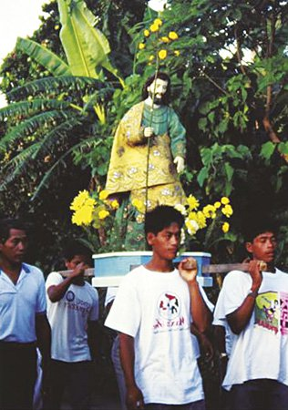 Procession in honor of San Jose in Batanes, 1990 (CCP Collections)As noted by Spanish chroniclers during the colonial period, the most widely accepted belief among the Ivatan centers on the anitu. The Ivatan anitu is a category of invisible beings believed to have the power to assume visible form at will. Souls of the dead, environmental spirits, and wandering entities are anitu. There is no accurate Ivatan term for the supernatural or spirit world. These spirits are associated with the nonmaterial world, ordinarily unseen, and thus referred to as sira u di a vuya (those who cannot be seen).
Generally, the Ivatan do not worship spirits or invisible beings. Rather, these are respected so as not to incur their ire, petitioned to obtain their favors, appeased when angered, and exorcised or warded off when they become undesirable or harmful. For example, their dwellings such as trees or cairns must be respected and not to be disturbed without their permission. Owners of farms that are under the guardianship of the anitu must offer food and drink at least once a year at the saku (that part of a farm where the farmhouse or cooking place is located) through the ritual called kapamivyay or mamivyay (to keep alive the presence of the anitu). The ritual usually consists of the killing of an animal, spilling part of its blood on the ground, and leaving a piece of meat with other cooked food and a small amount of good quality palek. Another ritual called kapayvanuvanuwa (preparing the seaport) is observed in Basco usually every 15 March to honor the supernatural entities of the sea. The ritual consists of killing sacrificial animals, pouring wine on the sea, addressing petitions to the anitu, and reading the omens in the internal organs of the sacrificial animal.
Cursing is greatly feared because the Ivatan believe in the power of the spoken word. They recite formula prayers, especially in exotic languages like Latin, to obtain magical favors.
To avoid the displeasure of dead relatives and ancestors, animals must be butchered and a feast offered in their honor at proper times. The anitu of persons who have died violently are believed to appear to frighten people unless all traces of their blood are burned or washed out. Many methods can be used to get rid of malevolent anitu: putting painted or wooden signs of the cross on their dwelling places, sprinkling holy water, or using blessed palm leaves, holy images, pictures and crucifixes. The smell of garlic is believed to be offensive to the anitu and bad spirits. An odorous vine called rayi and the fragrant smell of blessed incense are also used to ward them off.
In Itbayat, michamkam (clearing of the forest for farming) is preceded by a ritual to rid the forest of the anitu. At the foot of a nonok tree (Moraceae family), the mamihay, usually an old woman, asks the anitu to leave the forest. It is believed that if the clearing of the maraet a takey, literally “bad field” or “field still inhabited by the anitu,” is not done, members of the community will get sick.
Human mediums like the mamihay deal with the anitu. The machanitu is believed to possess powers given by invisible forces to be used against evil. The mamkaw also communicates with the spirits and has extraordinary powers that are generally used for retribution. The masulib du dasal (one who knows magical prayers) or manlatin (one who has Latin spells) casts spells in Latin mixed with Ivatan or Spanish translations of prayers. The manulib is a maleficent witch possessing a tuvung (bamboo tube) containing an assortment of ugly creatures like lizards, centipedes, roaches, snakes, and rats, which she uses to inflict pain or death on people she hates. The mamalak is a diviner who can read one’s fortune through the palm of the hands or from other signs of the body. The mangaptus (masseur) and mamyay (midwife) are healers whose main method of diagnosis and cure is massage. The pali (usually a Catholic priest) is also regarded as a gifted medium with special powers against demons and malevolent spirits.
Traditionally, the Ivatan believed that a person had two souls, one on each side of the body. When someone was seriously ill, it was believed that one of the souls had left the body to wander about aimlessly. Food and drink were offered to make it come back. Food was set in the place where the soul was thought to have wandered, and the soul was entreated to eat the food and to put on the clothes of the sick person.
From 1783 to 1898, the Dominican missionaries labored to Christianize the Ivatan. They used music, dance, and drama to inculcate the Christian worldview in the Batanes folk. Today, religious feasts continue to be celebrated in Batanes, such as the feasts of Nuestra Señora del Rosario, San Jose, Santo Tomas Aquino, Santo Domingo, San Vicente Ferrer, San Luis Beltran, Santa Ines de Montepulciano, and a host of other Dominican saints to whom the people turn for succor and protection. As in many Christianized towns, beliefs in these saints and in the teachings of the Catholic faith coexist or merge with precolonial religious beliefs.
Religious Beliefs and Practices of the Ivatans
The aboriginal Ivatan lived in mountain villages, which were actually clusters of huts made mostly of light and perishable materials. As described by the William Dampier in 1687, the early Ivatan houses were built small and low, their sides made of small posts no more than 1.4 meters high. They had ridgepoles that were about 2.1 or 2.4 meters. A fireplace was built at one end, and the occupants had simple wooden boards placed on the ground to lie on. Houses were built close together in small villages located on the slopes or peaks of hills. They appeared to be stacked one on top of the other, since they occupied varying levels of steep precipices. There were wooden ladders reaching from the lowest to the highest level, which was the only way the occupants could get to their houses on the upper slopes or peaks of hills.
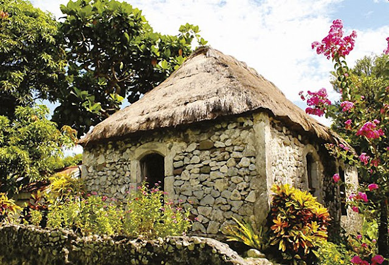 An Ivatan house known as rakuh, 2017 (Office of the Provincial Government of Batanes, batanes.gov.ph)The huts were low, partly because high structures would have been easily destroyed by typhoons and partly because Batanes did not have enough suitable timber nor appropriate tools for larger construction. Cogon grass was the main roofing material. To close the sides of the hut, cogon and sticks were used. Occasionally, the walling of the house was made of stones held precariously together by fango (mud mixed with chopped cogon).
Later accounts in the 18th century tend to show that Batan had become densely populated, with inhabitants concentrated in villages on the island’s outer circumference, the interior being planted with various crops. Houses still tended to be low, single-room, windowless structures with planked floors, and doors “so small one had to go on all fours to enter the house.” These houses were kept together, each one provided with a fenced enclosure for pigs and protected with stone terraces. Stone was used extensively for walls, steps, fences, paving and the like. At one end of the house was a fireplace with a smoke chimney that also doubled as light holes.
The more familiar Ivatan traditional house of stone and mortar known as cal y canto did not appear until the late 18th or early 19th century when the Spanish government and the missions were established permanently, and public structures like churches and tribunales, fortifications, and bridges necessitated stronger materials. The Spaniards introduced the use of lime as building material when they brought in stonecutters and masons from Luzon. Under the direction of the missionaries and the Spanish officials, these artisans taught the native population to replace the traditional and weak stone-and-mud or cogon-and-sticks walls with thick stone-and-lime that provided greater safety against typhoons. The natives adopted and made these methods and skills their own.
The limestone Ivatan house may be considered a stronger version of the primitive hut—a single edifice that served as kitchen, storeroom, and sleeping quarters. Roofs were thickly thatched with the cogon grass and vuchid about a yard thick when new, and heavily fastened with many layers of clipped polished reeds and rattan to support rafters and beams. The older Ivatan house was usually a rectangular structure with two heavy wooden shutters for doors. The four-sided roof slopes upward to the ridge. The floor is now raised to about two meters high.
With progress came the value of larger living space and the comfort of brighter and smokeless living rooms. The wealthy Ivatan built bigger, two-story houses called rakuh (big house), which had a living room and sleeping quarters separate from the kitchen. The Ivatan now build as many as three houses in one home lot or compound. The third house, the smallest in the lot, is sometimes built to serve as the toilet and bath area. The rakuh has two doors and two windows built in three walls, while the fourth wall, which faces the direction of the strongest winds during typhoons, is left windowless. As further protection against these violent winds and strong rains, a big roof net called panpet, made of strong ropes fastened to strong pegs or large stone anchors, is thrown over the entire roof during typhoons.
The Ivatan house is designed and built not only to withstand the battering of the severest storms, sea sprays, squalls, and rains. It is also structured to withstand earthquakes. This is why hardwood posts are embedded inside the walls, running all the way to the eaves, where they are joined to the beams and frames of the roof.
With the introduction of cement, galvanized iron, and reinforcement steel in recent times, new house designs are absorbing the influence of urban, particularly Manila architecture. These new materials could arguably make for more durability and better resistance to typhoons, but the net effect is a gradually changing architectural landscape in Batanes, particularly in the capital, Basco. If the modernizing trend continues, the unique, durable, and dependable thatched lime-and-stone Ivatan house may soon become extinct.
Historical Old Churches in Batanes
There are four church buildings of historical significance in the Batanes: Santo Domingo at Basco, San Jose in Ivana, San Carlos in Mahatao, and San Vicente in Sabtang—all of massive lime-and-stone construction and originally decorated in baroque.
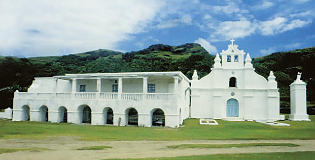 Church of San Vicente in Sabtang, Batanes, 1990 (CCP Collections)Construction on the Church of Basco began in 1795, with the facade being completed by Dominican Father Nicolas Castaño in 1812. This facade, which has survived to our day, is a rectangle lying on its length, surmounted by a nearly equilateral triangle. “Binding” the rectangle and the triangle are six thick pilasters rising from foundation to top that also serve as buttresses. Between the bases of the two central pilaster-buttresses is the main door which is a round arch crowned on the outer side with a shallow lancet arch. On each of the panels between the pilasters which frame the door and the two pairs of outer pilasters are round arch niches also crowned with shallow lancet arches. Intersecting the pilasters on the upper facade are three parallel broken cornices, the central one bearing a large window directly above the main door, thereby illuminating the choir loft inside. The two side panels are decorated with lancet relief arches. The top central quadrangular panel between the middle and uppermost broken cornices stands above the rooftop and has two round arches from each of which hangs a bell. This portion of the facade serving as bell tower and called espadaña makes a separate campanile unnecessary. The pediment surmounting the bell arches is the crucifer. All the six pilasters are tipped with finials, but the two central pilasters have finials surmounted by crosses, which were added later.
The cal y canto material of the facade is now hidden behind a plaster of smooth lime and sand stucco that is in turn now masked by layers of lime whitewash accumulated over the years. The original high altar, which stood below a tall end wall, had niches for statues of saints and was ornamented in baroque. There were also two side altars, one of the Lady of the Rosary, which are now lost.
Next to be built after Santo Domingo was the church of San Jose in Ivana, whose foundations were laid in 1795 by Dominican Father Francisco de Paula in the Radiwan site. The original church was longer than the present. It was designed to accommodate the people of Ivana, Uyugan, and those of Sabtang who, after a rebellion, were exiled in Ivana from 1791 to 1844. After a fire destroyed the church and after the exiles returned to Sabtang in 1844, the church was shortened from the altar end. The burned retablo and side altars have never been restored. The altar and the rest of the interior decoration are of recent origin.
The present facade was built by Dominican Father Fabian Martin between 1866 and 1869. He modeled it after the facade of Santo Domingo in structure and ornamentation but scaled it down to just four pilasters and two broken cornices. Unlike Santo Domingo, the San Jose Church has no espadaña but had a unique campanile with crenelated top built by Father Jose Fausto de Cuevas circa 1817. It was on top of this campanile that the Katipunan flag was first hoisted on Ivatan soil on 18 September 1898, when the ship carrying the Katipuneros from Cagayan landed at the port of Radiwan on that day.
The San Carlos Church was built after the 1872 typhoon that destroyed an older structure. The facade is also patterned after that of Santo Domingo, though shorter and narrower than its model. It has six pilaster-buttresses topped by finials, a round arch main door, a large window above the main door for ventilation and illumination of the choir loft, and two smaller round arches for bells above the roof level. To accommodate the six pilasters in a narrower space, the San Carlos pilasters are narrower and much closer to one another, leaving no room for niches in between. The effect is that of many vertical lines racing upward creating the illusion of height. The four broken cornices running across the pilasters neutralize what otherwise would be a monotony of too many vertical parallels. The stucco plaster and whitewash is similar to those of Santo Domingo.
The nave of San Carlos is enclosed by two side walls buttressed both outside and inside. The inside buttresses are very massive pilasters. Two large side doors and windows open on the wall panels between the buttresses. The baptistery is below where the choir loft used to be before its removal in 1994 and behind the right side of the facade. A circular window is above the baptistery.
The beauty and elegance of the original wooden retablo and images of saints above the high altar and the two side altars—all in polychrome and gilt baroque—still linger in what remains of the original.
The Sabtang Church of San Vicente was built by Dominican Father Antonio Vicente from 1844 to 1863. Like the other Batanes churches, this lime-and-stone church was also broadly modeled after that of Santo Domingo in floor plan and facade. It has an espadaña, four massive pilasters on the facade, and heavy-set finials. The original crucifer at the apex of the facade and the bell arches were blown down by a hurricane in 1956 and replaced by the stylistically incongruous present top after 1956. To the right of the facade stands a massive square, pillar-like wall surmounted by a stone statue of San Vicente Ferrer, patron of the parish and town.
The nave is enclosed by thick stone and lime walls buttressed on the outside and plain on the inside. Two side doors and the windows are found on the wall panels between the buttresses. Before Father Rafael Carpintero OP remodeled it in the late 1970s to 1984, the roof was of cogon and the pillars, beams, and the rafters were of wood. The church also had a wooden pulpit, a choir loft, and baptistery, all of which are now gone.
The original baroque retablo above the high altar with niches for statues of saints was made of polychromed and gilded wood. Much of it had deteriorated and had to be replaced with new carved wood. Unfortunately, the replacements have not lived up to the originals. The side altars of the Nuestra Señora del Rosario and the Sagrada Familia, which were done and decorated by the Dominican friar artist Rafael Cano between 1869 and 1876, are now mere parodies of what used to be splendid baroque master compositions of polychrome woodwork and gilt sunbursts at their crowns.
The remodeled nave with its new round concrete pillars has obscured from general view the side altars that used to be devices to focus attention to the high altar. The sanctuary has been elevated several feet above the original, making the Mass celebrant much more visible to parishioners standing at the far end of the rather long nave. The nave’s flooring has also been leveled—the original floor was slightly inclined downward to the front door—to a height far above the original level of the main door’s threshold.
Ancient Ivatan Arts and Crafts
The Ivatan were fond of body ornamentation, including gold jewelry and beads, and blackening their teeth. Men had their ears pierced, with two holes in each earlobe if they were members of the elite. Ornamentation for the ear could be as simple as a ringlet of thread or as ornate as a gold earring. Those who owned golden ornaments had their children wear these as a sign that they were wealthy. The more wealth a man was known to possess, the more respect he commanded and the more authority he wielded. Losing his wealth, a man also lost the esteem and obedience he enjoyed from his people. Sometimes the men wore vests covered with the fat of pigs, a sign that they owned many pigs and were rich. Women wore golden earrings and necklaces, and covered their legs with multicolored shining beads called kadas. Wives of the elite wore glass bead earrings that reached down to the neck. Itbayat women also wore beads around their legs and waist, and sometimes used the greasy gold coverings called songot. Men and women used to blacken their teeth. This was done with the ground leaves of the almond. Wrapped in talisay leaves, these were toasted on embers and mixed with clay that had been sprinkled with ground sulphur. The paste would then be spread on a small banana leaf and applied on their teeth before sleeping. Teeth were made shiny by smearing them with the fruit of the rayi vine, which had a foul smell.
 Ivatan woman crafting gold jewelry, 1990 (CCP Collections)
Ivatan woman crafting gold jewelry, 1990 (CCP Collections) Gold was already an important medium of commercial exchange as well as personal ornament in 17th century Batanes. So valuable was gold to the Ivatan that they did not allow it to be buried with their dead. Abalorios or beads, which made their appearance in the 18th century, were eventually used to augment gold as ornaments being used by the Ivatan. Such ornaments included a gold cord usually worn around the neck by children and a gold necklace called padijit made of gold wire. Then there was a rangat, a headband or diadem, which actually was a gold hoop. Some of the traditional gold ornaments of the Ivatan include the maysanud or chinalin, a double necklace of beads and gold linked several times by larger yellow translucent beads called vatutuk; the nidannug or dinannug, textured gold tubelets, several of which usually compose segments of the maysanud; the padijit, a braided gold necklace in the form of lattice work; the rangat, a crown made of gold and beads; and the vinaay, a bracelet made of twined gold wires. In Itbayat, the gold tubelet chñamañji appears to be similar to the nidannug or dinannug in that the tube is pricked from the inside to achieve a textured appearance.
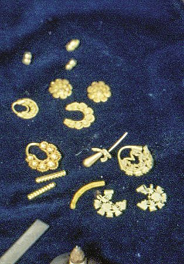 Samples of gold jewelry in Batanes, 1990 (CCP Collections)The value placed on gold is evident even in Ivatan oral literature. In some laji (lyric folk songs), gold is sung to as a valuable object in itself or as a measure of social dignity and pride. A lajialso mentions a “double necklace” made of beads called mudag and vatutuk.
An ancient Ivatan art or craft that has survived to this day is boat making, using techniques developed by the hardy, seafaring ancestors of the present Ivatan. Batanes is perhaps the only place in the Philippines where the outriggered boat known as the banca is not made. The extraordinarily rough conditions of the seas around the islands of Batanes made it necessary to design a sea craft that would pitch and roll with the waves. These were the round-bottomed boats which are of three types: the tataya, a dory just big enough for three to five passengers and measuring some four meters in length; the falowa, 10 to 15 mteres in length and capable of carrying at least 20 passengers; and the chinedkeran. The vutalaw (palomaria tree), which grows in abundance on the islands and serves as windbreakers on the sloping fields of Batan, has been widely used in recent times as the material for boat construction.
Ivatan basketry is distinctive for its design and function. The batulang and yuvuk are utility baskets with woven head straps, used for carrying tubers from the fields and other objects. These baskets, as well as the kalapay and pasikin, are made from nito (bamboo strips). During rainy days, men wear the soot, a rain cape made from stripped fronds that cover the upper part of the body from the neck down. What is probably the best-known Ivatan handicraft is the vakul, the combination headpiece and rain cape worn by women, which is made from thickly woven strips of palm or banana leaf and covers the head, shoulders, and back of the wearer (see logo of this article).
Religious art in Batanes, essentially a contribution of Spanish Catholicism, is important proof that a rich religious culture once enjoyed primacy in Ivatan life. Religious objects or articles were imported and subsequently served as models for Ivatan apprentices, who then acquired the artistic skills that have become part of the Ivatan cultural heritage. Some of these artifacts are still found and used to this day. Examples of religious statues are the remains of the 19th-century Santa Catalina de Siena in Mahatao, wood polychrome; Nuestra Señora del Rosario of Sabtang; the Jesus Nazareno of Sabtang; the Nazareno of the cathedral in Basco; and the Nuestro Señor de Santa Paciencia in the parish convent in Basco.
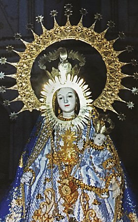 Our Lady of the Rosary in Mahatao, Batanes, 1980 (The Glitter of Gold: In Batanes Cultural Heritage by Florentino H. Hornedo. University of Santo Tomas Publishing House, 2000.)Paintings are also among the works of religious art, which still exist today in Batanes, a significant example of which is Santo Niño, Salvador del Mundo (Holy Infant, Savior of the World), in Sabtang, oil on canvas, 56 x 88 square centimeters, by an anonymous painter. One tabernacle created by a native Dominican, Fray Gregorio Hontomin, is found in the chapel of Savidug. Ornaments or religious statues showcase Ivatan artistry in jewelry making and sculpture. The jewelry of the statues of the Virgin in Sabtang which escaped the ravages of the Katipunero are perhaps most representative of the 19th-century image of the Virgin. The ornaments, all in gold, consist of the following: bumbolya or earrings with teardrop design, aureole around the face, royal crown, and a large sunburst halo with stars. On feast days, she also wears various gold jewels donated by devotees.
Ivatan Literary Tradition: Riddles, Tales, Songs and Poetry
Ivatan literary tradition is divided into those that are sung or chanted and those that are not. To the non-sung tradition belong the kabbuni (riddles); the pananahan (proverb) lore; the kabbata (legends); the istorya (tales); the sisyavak (humorous anecdotes); and the viay (religious hagiography of the Spanish period). Itbayat folktales are kavvataahen. To the sung tradition belong the kalusan (working songs); the laji (lyric folk songs); the kanta (songs of recent provenance); and the religious songs of the Spanish colonial period.
The Ivatan word for riddle is kabbuni. This is used by adults to amuse children or by children to entertain themselves and less frequently by adults for their own entertainment. The kabbuni’s themes are derived from objects and phenomena in the environment. The riddle itself is made up of the introduction “Buñi mo buñi ko aya” (Guess my riddle) and the description of the object or phenomenon.
Lakmen no vuchivot ko ta manghap ako su kanenta. (Tatari)(Hold my tail and I will get our food. [A sharpened stick to take out boiled tubers from the pot])
Laylayan an dekey pa, as an malkem dana am vahasan. (Unas)
(Dressed when young, undressed when grown old. [Sugarcane])
Tumañis anu cuman. (Pasuk)
(It cries when it eats. [Wooden sugar mill])
Makanat ako su rakuh a puget as makanat ako aya su rayem. (Ranum)
(I can carry a big log, but I cannot carry a needle. [Sea or water])
Maychatohong am mayvuya sa aua. (Mata)
(They are neighbors but cannot see each other. [Eyes])
Pananahan is the Ivatan proverb, which is used for moral instruction or philosophical explanation. Reflecting common occurrences in the individual’s daily life and employing metaphorical language, it suggests acceptable ways of doing things, or correct social attitudes.
Mayraraya ava o chirin.(Words don’t bleed. [Meaning, Words do not hurt to the point of causing blood to flow.])
Makadadam kamu ta ara ava u di a tawa nu vahayang.
(Be generous, for there is nothing that a knife cannot divide.)
Aranu manngu u kalaveng mo nu ahub am chitahen na u katwaw na.
(No matter how you bury smoke, it will always seek a way out.)
Ara ava u asa a ka kahasan a kabwan nu vuday.
(There is no forest without a serpent.)
Uyud sawen u vata dawri nu nanma tau: ara ava u riyes abu su vinidi.
(The saying of the ancients, after all, is true: Every sea current has a reverse.)
The kabbata is a prose narrative corresponding to the English legend and is believed to be of ancient origin. It is usually narrated as part of the entertainment and social process during drinking sessions, or when farmers get together at the end of the day to celebrate napakyaw (the completion of a day’s work), or when older persons wish to entertain children. An example of the kabbata is the “Minamina” from Sabtang Island. The legend takes its title from the name of the central character, the legendary ruler of the Isumnanga in western Sabtang, who was known for his cruelty and greed. Other kabbata are “Pudalan,” “Baut,” and “Juan Miseria.”
“The Fire-eating Ghost” (Illustration by Benedict Reyna)The istorya are short narratives with more or less true historical foundations but with elements of fantasy or horror. These include stories about encounters with ghosts or unusual adventures. Examples of the istorya are “The Fire-eating Ghost,” which tells of a man who sees a dark figure eating burning coals; and “The Man Who Would Not Allow His Pig to Be Butchered,” which is about Pedro, who decides to enjoy a taste of his pig after he is duped into believing that he has seen an omen of his death.
Sisyavak is a practical or verbal joke, usually in the form of an anecdote. These jokes, told to lighten heavy work, include “The Turtle on Whose Back a Coral Reef Has Grown,” “The Manauy Who Caught Fish with His Feet,” and “The Fisherman Who Capsized.”
During the Spanish colonial period, some forms of prose narrative were introduced to teach the doctrine and values of the Catholic faith. Most important of these were the hagiographic and meditational religious literature such as the viay (biography) of saints and the ejemplos and meditaciones encountered in novenas.
Origin stories, legends, and stories of specific people and places comprise the kavvataahen in Itbayat. One kavvataahen narrates the origin not only of the Ivatan but also of the Yami who are considered the aboriginal people of Taiwan. According to the story, the Ivatan used to live in Luzon but was forced to take refuge north in the Batanes islands, in order to avoid Spanish Christianization and persecution. Once there, they began a new life and even made a new language that was to be the beginnings of the Ivatan and their language. But the Spaniards soon followed, and those who were caught fled further north. These people were later to be known as the Yami, who also started a language based on what they had already learned in Batanes. This explains the linguistic similarity between Ivatan and Yami.
The Ivatan have barely preserved the working song called the kalusan. It is normally sung in chorus by field workers, by boatmen as they row with their oars, or by teams of men sawing lumber. Its function is to synchronize movements for work that requires unity of motion by team workers. The lyrics of the kalusan could be about farm work, about rowing, or cutting wood. The kalusan rhythm depends on the particular rhythmic demands of the work it accompanies. Unfortunately, the kalusan is swiftly disappearing as a tradition.
The kalusan is made up of a vachi (prefatory invocation), which is sung by a soloist called mayvachi, and the body of the song called kalusan. It is sung alternately by a manlachi (song leader) and a chorus of workers in one particular activity. In the traditional procedure of singing, the manlachi, who is also usually the mayvachi, sings each line alone, which is repeated by the chorus after him until the entire song is completed or the work is finished.
In 1923, Norberto Romualdez recorded a rowing song sung to him by Atanasio Dapilan, a farmer and fisher from Sumnanga, Sabtang. This kalusan, titled “Un As Kayaluhen” (Yes, Let Us Hurry), has two parts: one for solo voice and the other for chorus.
"Solo:
Un as kayaluhen, kakaluhen
Chorus:
Un si payawari, paariñin
Solo:
Un nuu akma diwiyaaten
Chorus:
Un as paayawa, paypisahen
Solo:
Un as paayawa, paalangen
Chorus:
Un si wayaavat, moonay.
(Solo:
Yes, let us hurry, let us hurry
Chorus:
Yes, we pull the oars with rhythm, so let it be
Solo:
Yes, let it be by rowers like us
Chorus:
Yes, we pull the oars with rhythm, for once let it be
Solo:
Yes, we pull the oars with rhythm, let us pull
Chorus:
Yes, the oars, your very oars now.)
"
Another traditional Ivatan literary form is the laji or lyric folk poetry cast in metaphorical language. It is divided into verse lines generally of 14 syllables, of which the 4th, 7th, 10th, and 14th are stressed. The laji has no rhyme scheme. Normally sung, its melody consists of one or two musical lines that are repeated over and over until the whole poem is finished. The laji has no specific length, but is generally short. There are restrictions as to topic; the specimens on record reflect a concern for Ivatan social life and problems. Most of the recorded and well-known laji are love songs and marriage-related.
The language of the laji is deliberately poetic, which makes it difficult for the uninitiated to understand it immediately. As in other traditional poeticjousts, guessing the meaning of a poem is part of the game. The poetic aspect of the vocabulary is generally in the form of archaic terms or common words which are embellished for aesthetic effect or modified in form by the addition of syllables to fit them into the number of syllables required by the musical line.
 A woman looking at the reflection of her loved one, narrated in an Ivatan laji (Illustration by Benedict Reyna)
A woman looking at the reflection of her loved one, narrated in an Ivatan laji (Illustration by Benedict Reyna)
Laji may be sung during rituals, courtship and pre-wedding ceremonies, social events and celebrations, drinking sessions, and funeral wakes. One laji presents a spouse who, upon seeing the reflection of her loved one in the bowl of water she has boiled for drinking, thinks of the ephemerality of life, and expresses her desire for immortality:
"Muyin paru ñinu si tauri a mañiañinu
du chinuhat ko a danum, nia di ko s’ di pachilupa
ta pakaynaynamen ko a mavuya?
As anu madiman aku, nia ivuvun mo ava yaken
du kurus di San Pilis, as ivuvun mo yaken
du asked nu kuku mo ta pachisuvusuvuay
ko du kanen mo a mahutu as pachidiludilupay ko
du inumen a danum.
(Whose face I do behold, mirrored
Upon the water I have boiled to drink?
I do not dare drink to prolong the vision.
If I die, bury me not at the cross of San Felix,
bury me
under your fingernails, that I may be eaten along
with every food you eat,
that I may be drunk along with every cup
of water you drink.)
"
Another example of the laji illustrates the importance of gold in Ivatan society (Hornedo 2000):
"Vuhawan du valugan, vuhawan du kadpidan,
Miruwa ka mayvidi du adan mo a katachiran,
Ta dayasayangen ko imo nu daya,
Nu daya nu mohongen, nu daya nu mohongen.
(Gold of the East, gold of the West,
Return to the old braid to which you belong.
For I will offer you a libation of blood,
The blood of a piglet, the blood of a piglet.)
"
Kanta is the generic name applied to all types of popular songs other than kalusan and laji. The name suggests that this form may have begun during the Spanish period. There are only a few extant kanta remaining. “Modern” music through the radio has come to replace the kanta in the lives of the Ivatan. But these songs used to be sung by Ivatan in their leisure time, in serenading women, and as dance accompaniment during weddings. The typical kanta is a romantic, sentimental love song, the most popular example of which follows:
"Asa ka ’hep a mahanebneb
du kariyal nu vuhan
kanalasal nu apun
du huvuk nu kamuhamuhan.
nu taul ko a naykandado
pinuspusan mo a iwangan
makayamot du avid mo
abus’ kapalit.
an’ makavuya ka pa’nti
su maypavid pa kayaken
am karuwan mo na yaken
du huvuk nu pandidiwan.
(One cool night
when the moon was shining
when the dew was falling
in the midst of the garden
my padlocked heart you forced to open
by means of your beauty that is without equal.
If you will ever find
someone fairer than me
please do not abandon me
inthe midst of pain.)
"
Also sung are certain poetic forms that are of Spanish colonial origin. These have been preserved and transmitted in writing and in print using Ivatan and Spanish. They consist of the gosos (from the Spanish gozos, similar to the Tagalog dalit), the inispanyol, inivayvatan, sagala, ipamahemahes, and pasyon. The gosos and the inispanyol are in Spanish verse, although there have been instances when the gosos were translated into Ivatan. The rest are in Ivatan verse. In all cases, except the pasyon, the poems are in stanzas interspersed with a refrain (identical to the manner of the Tagalog pabibinian in the dalit). The gosos are sung or recited during novenas, and are sung and danced during the celebration of town or village fiestas. The inispanyol, inivayvatan, sagala and ipamahemahes are always sung and danced exclusively during fiestas and theatrical presentations.
Ivatan Folk Dances and Rituals
The ancient Ivatan were described in Dominican accounts as a fun-loving people, given to many celebrations and feasts. Unlike in other traditional communities, however, dancing and music were not the most significant part of such festivities. It is said that there was once an indigenous Ivatan dance that was performed when the people wanted to amuse themselves. The performance called for two lines of dancers, men and women facing one another. It began with a plaintive song from one of the male dancers, and the song was then tossed between the two lines of dancers, accompanied by the rhythmic loud stomping of feet. They lifted their arms once in a while “in a gesture of admiration.” Yet despite the entertaining and social nature of this dance, it was not the most important feature of Ivatan festivities, and neither was music or games. The early Ivatan, in fact, had no knowledge of even simple musical instruments, and no evidence of these has been found. In their feasts, the highlight was the killing of goats and pigs and the uninhibited consumption of palek.
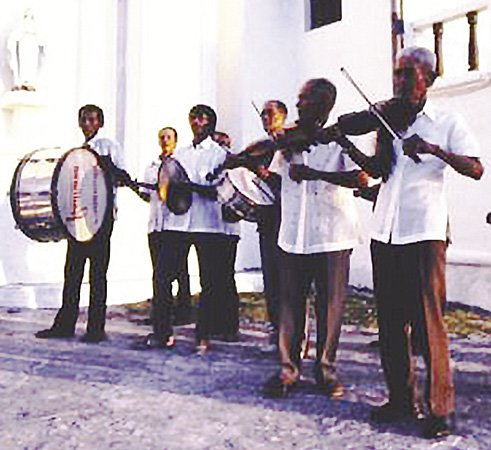 Ivatan band, 1990 (CCP Collections)The original indigenous music and dance of the islands have not survived. Thus, the dances there now may be assumed to be of Spanish-Ivatan provenance, with perhaps only the faintest echoes of ancient tradition. One example may be the pandanggo ivatan. This pandanggo, still done in the remote barrios of Batanes, is performed during a wedding. Definitely European in influence, the dance has three beats to a measure, and the dance itself consists of forward or backward close steps or waltz steps. Hand movements like the Tagalog kumintang are required by the dance. Aside from the waltz beat, there is a mazurka sideward-stepping movement as well as sliding and brushing steps.
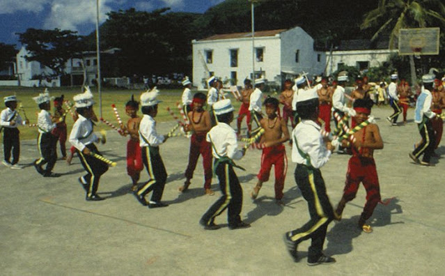 Ivatan dance called palu-palo, 1990 (CCP Collections)A type of dance-drama performed on the Feast of San Jose de Ivana and also sometimes in other town fiestas is an all-male dance, a ritualistic or stylized mock battle, using different steps and different ways of fighting. Wooden sticks are used as props or weapons, which explains the name of the dance: palu-palo. Several melodies are played by a brass band to accompany the dance, one melody for each style of fighting and marching. This version of the moros y cristianos follows the theme of all such dances: the conflict between Christians and Moors, and the defeat of the Moors. The Christians and the Moors are distinguished by their costumes. The Christians wear Western attires in light colors and emblems of the Cross while the Moors wear “Malay” costumes in red with cresent moon and stars. The music and the styles of fighting have been handed down for generations remain the same.
In the Ivatan fiesta, the palu-palo, the folk dances and music, the verses recited by small children, are a public performance of religious ritual and a proclamation of faith in the patron saint. Significantly, the Ivatan fiesta, like the festive rite of banquets, the singing and folk dancing by young and old, and general merrymaking in the ancient past, begins when the planting period ends and ends when the next planting cycle begins.
In Batan, particularly in the seaside areas of Chanpa-n, Manichit, Maratay, and Diora, where mataw (hook-and-line fishing) of the fish arayu or dorado (Coryphaena hippurus) is practiced, fishermen perform the sacrificial rite mayvanuvanua. The mayvanuvanua, which consists of the slaughter of a pig at the shoreline and drinking of palek, is the ritual construction of the vanua, a seaport or point of departure of the mataw fishermen. The ritual commences the mataw season, which occurs during the summer months of March, April, and May. The following is recited during the ritual (Hornedo 2000):
"Manma kadiman su viñay aya
aysayang su vanua ya Dita’ta-n,
as an sino u may suerte su marahet diaten
na ma’sa a mapia su cooperasyon,
nu u dia na am nu viñay aya
a tayto namen dimahen.
Nu mapia ya vuhawan am isadiw namen
su vanua da yanu apuapu namen di Dita’ta-n,
as nu marem aya,
am akmanchi siya u karuariem da Waryen kada Kasi
isavasavat namen a makaraya du vanua aya Dita’ta-n,
as akma kamu anchi nirakayan vunus
du yuhwan namen aya.
(We kill this animal here
to sacrifice for the vanua Dita’ta-n [name of a
particular vanua],
and whosoever is destined for bad luck or misfortune
among us,
who are joined together with good cooperation
let it go to this animal instead,
whose life is now taken.
With this valuable vuhawan [gold]
we pay for
the vanua of our ancestors of Dita’ta-n.
And this Marem [a motin or bead offering],
that looks like the sea, green with you Waryen and
Kasi [ritual names for flying fish and dorado]
that will come home with us fishers that land here at
the vanua Dita’ta-n.
So you would be hanging up to dry in reward for
our yuhwan [a form of cooperative work] here.)
"
The end of the season is marked by the kapaychava’ nu vanua (ritual dismantling of the vanua) in May. The designated mandinaw nu vanua (first fisher) does this by diving into the vanua and removing a stone from the bottom.
Media Arts Featuring the Ivatan People
Radio stations within Batanes include government station DWPT Radyo ng Bayan 1134 AM, and community stations Radyo Natin 103.7 FM and Radyo Yvatan 95.7 FM, all located in Basco. Another station, Radyo Nutriskwela or Kayvayvanan DZNB 97.5 FM, resumed operations in February 2014 after a typhoon forced it to go off-air in September 2013.
Mainstream film Batanes, 2007, is a story about a woman who chooses to abandon city life for life with an Ivatan and his family. In 2008, the film received the Filipino Academy of Movie Arts and Sciences (FAMAS) Award for Cinematography and the Golden Screen Award for breakthrough performance by an actor. Independent film Kadin (The Goat), 2007, follows the search of a boy and a girl for a missing goat that is also their family’s source of livelihood. The film, which won awards for cinematography and original music score at the 2007 Cinemalaya Philippine Independent Film Festival, was also featured at the ici et ailleurs (here-and-elsewhere) section of the 60th Locarno International Film Festival in Switzerland. In 2014, Perci Intalan’s directorial debut, Dementia, starring Nora Aunor, was shot in Sabtang and Basco. The horror film won the Saint-Tropez International Film Festival awards for Best Foreign Film and Best Lead Actress in a Foreign Film. Nick Deocampo’s Batanes, 2012, is a documentary film on mataw fishing and the relationship between humans and their environment.